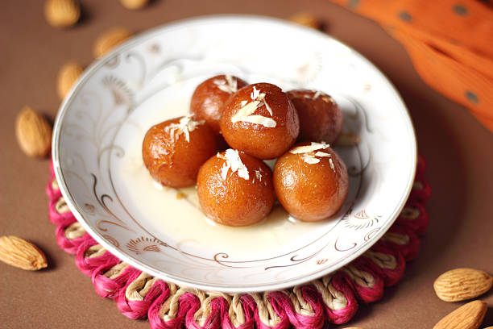

Gulaab jaamun
Ingredients
- 1 cup milk powder
- 1/2 cup all-purpose flour
- 1 tablespoon ghee or clarified butter, melted
- Oil or ghee for frying
Procedure
- In a large bowl, combine the milk powder, flour, baking powder, and ghee. Mix well until the ingredients are evenly combined.
- Gradually add milk to the mixture, kneading it until it forms a soft dough. The dough should be neither too dry nor too sticky.
- Meanwhile, prepare the sugar syrup by adding the sugar and water to a saucepan. Bring to a boil over medium heat, stirring occasionally.
- Once the sugar has dissolved, add the saffron strands and cardamom pods. Reduce the heat to low and simmer for 10 minutes, or until the syrup has thickened slightly.
- Fry the gulab jamuns in batches until they are golden brown and cooked through.
- Add the gulab jamuns to the sugar syrup and let them soak for at least 30 minutes, or up to overnight.

Barfi
Ingredients
- 2 cups milk powder
- 1 cup sugar
- 1/2 cup milk
- 1/4 cup ghee
Procedure
- In a large bowl, combine the milk powder, sugar, and milk. Mix well until the ingredients are evenly combined.
- Heat a heavy-bottomed pan over medium heat. Add the milk powder mixture to the pan and cook, stirring constantly, for about 15 minutes, or until the mixture thickens and leaves the sides of the pan.
- Let the mixture cool completely in the refrigerator.
- Garnish the milk barfi with chopped nuts or dried fruit, if desired.